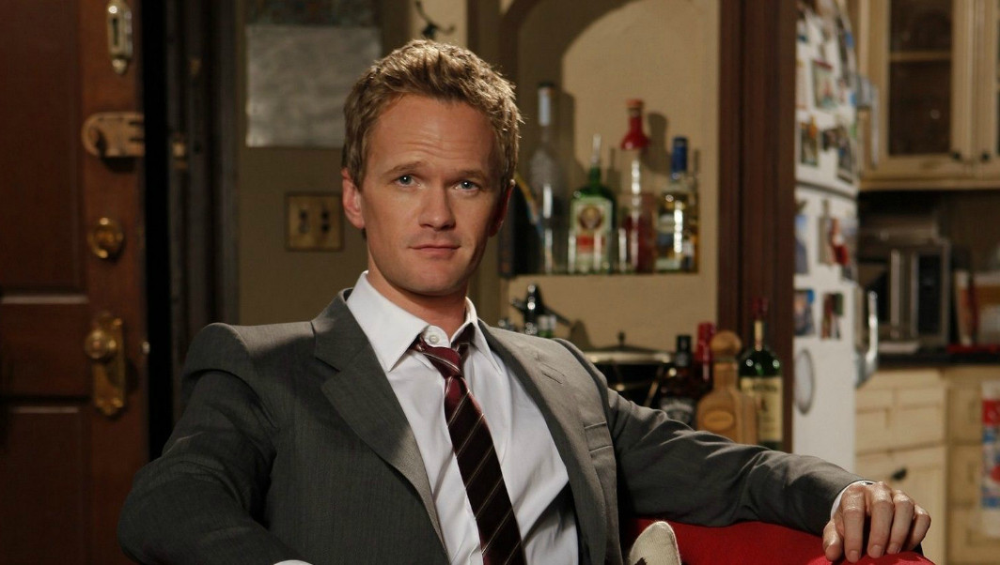

Character. Barney Stinson is one of five main characters on How I Met Your Mother. He is a manipulative, oversexed businessman in his thirties who always wears a suit, likes women with "daddy issues" and is frequently willing to offer his (sometimes hypocritical) opinion.